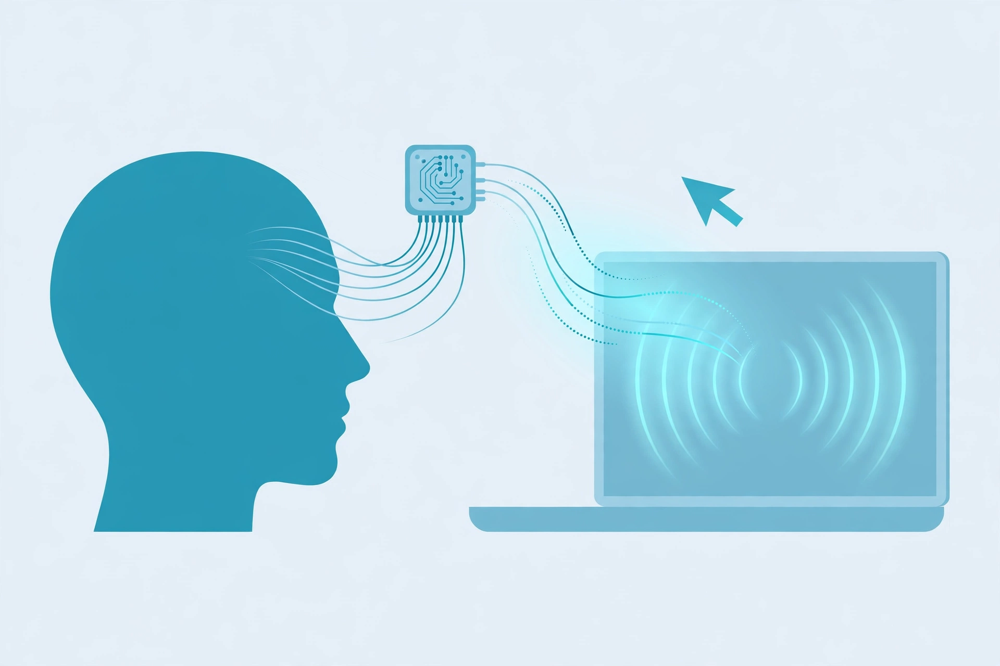

2026년 11월 27일

일론 머스크가 세운 뇌-컴퓨터 인터페이스(BCI) 기업 뉴럴링크가 25일(현지 시간) 미국 식품의약국(FDA)으로부터 뇌 이식 장치의 확증 임상시험 승인을 받았다고 밝혔습니다. 미국에서 이식형 BCI가 확증 임상 단계에 들어간 것은 이번이 처음입니다.
이번 임상시험의 이름은 '링크(LINK)'입니다. 루게릭병(ALS)으로 중증 마비를 겪는 환자를 대상으로, 뉴럴링크 시스템이 얼마나 안전하고 효과적인지를 본격적으로 검증합니다. 참가자가 생각만으로 디지털 기기를 얼마나 정확하게 조종할 수 있는지, 오래 써도 기기가 안정적으로 작동하는지가 핵심입니다.
시험에 쓰는 'N1 임플란트'는 손의 움직임을 관장하는 뇌 영역에서 신경 신호를 포착합니다. 사용자가 손을 움직이는 상상을 하면 그 신호가 컴퓨터 명령으로 바뀌어 화면의 커서를 움직이거나 마우스 클릭을 할 수 있습니다. 마비 환자가 생각만으로 컴퓨터를 조작하는 실험용 제품 '텔레파시'의 기반 기술입니다.
다만 이번 승인은 제품 판매 허가가 아닙니다. 임상시험을 진행할 수 있게 된 것이고, 상용화까지는 임상 결과를 토대로 추가 규제 심사를 거쳐야 합니다. 뉴럴링크도 지금 장치가 여전히 실험 단계라고 밝혔습니다. 그래도 초기 안전성 확인을 넘어 상용화를 위한 본격 검증 단계로 넘어갔다는 점에서 의미가 큽니다.